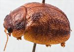
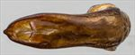
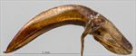
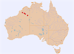

Click on images to enlarge


Male, Fitzroy Crossing, NW Western Australia


Aedeagus, dorsal view (Halls Creek, NW Western Australia)


Aedeagus, lateral view (Halls Creek, NW Western Australia)


Distribution
Name
Trachymela sp. Ta179
Reference specimen
2007-215d, Halls Creek, north Western Australia.
Adult Description
Length: ♂ 6.1–6.5 mm (n=5), ♀ 6.3–7.2 mm (n=7).
Colouration:
- Head: Uniformly yellow-brown to mid-brown, mandibles tipped dark brown or black; antennomeres uniformly straw-brown.
- Pronotum: Brown, concolorous with head, with lateral marginal area a fractionally paler shade.
- Scutellum: Brown, concolorous with pronotum, with margins of a fractionally darker shade.
- Elytra: Brown, concolorous with pronotum, sometimes with a fractionally darker shade in area between scutellum, humeral callus, and elytral summit; punctures concolorous with or a slightly darker shade than interstices; humeral callus concolorous with surrounding area.
- Venter & Legs: Yellowish-brown with metaventrite sometimes fractionally darker in shade, legs straw-brown; inner surface of elytral epipleura brown.
- Cuticular Wax: Unknown, likely to be similar to Ta130.
Morphology:
- Shape: Body very slightly gibbous in lateral view, greatest height viewed laterally well in front of middle of elytral margin, dorsal surface with noticeable discontinuity in curvature between pronotum and elytra.
- Head: Head with punctures moderately to very large (pd ≈ 2–4×ef), often quite unevenly distributed, interstices sometimes elevated and rough, especially near eyes, with some prominent longitudinally-oriented ridges present. Antennae short, particularly in females (AL/BL: ♂ 39–42%, ♀ 33%), filiform.
- Pronotum: Almost evenly curved transversely, foveal depression absent with epidermis elevated in a small pustule behind eyes; discal area with surface quite uneven and puncturation sometimes clearly but more often very vaguely impressed, an elevated pustule present on each side of disc near its lateral margin; puncture sizes vary considerably, unevenly distributed and moderately dense (spacing ≈ 2–4pd), becoming much more coarse at lateral margins. Anterior margins join lateral margins in a very smoothly rounded right-angle, with lateral margin initially and very briefly straight before curving smoothly and gradually towards posterior margin, broadest just in front of posterolateral angle.
- Scutellum: Punctured, with punctures similar in size but often better defined than on pronotum, evenly or unevenly distributed.
- Elytra: Surface evenly to slightly unevenly curved, punctures distinct and relatively large, relatively evenly distributed over anterior two-thirds of surface, surface slightly more granular in posterior third, with a sparse scatter of much smaller punctures on interstices; all but posterior third of disc is scattered with mostly short transverse, elevated ridges, with one just behind the shallow and usually small antero-median depression sometimes slightly longer; some small round verrucae present in posterior third of disc, sometimes aligned in longitudinal series or, less often, lightly merged to form a longitudinal ridge; surface continuous under humeral callus. Vertical extension of epipleura considerable (HCE/PW = 0.37–0.41).
- Venter: Prosternal process almost parallel, open or lightly closed anteriorly, a sparse scatter of setae present along prosternal process and on mesoventrite; a single long seta present on median and posterior trochanters, usually 1, rarely 2, on anterior trochanters; anterior edge of metaventrite beveled, slightly rounded.
Male Genitalia (Aedeagus):
- Dimensions: Relatively long and thin (LPE/BL = 30–33%, WPE/LPE ≈ 0.22).
- Dorsal view: Sides of shaft strongly sinuous, narrowing from basal sulcus towards middle and then widening again to the widest point just behind middle of ostium, from where sides converge smoothly towards apex, the rate of convergence increasing sharply just before apex, tip triangular; ostium oval, considerably longer than wide; dorso-median channel short, sometimes extending very faintly a little past ostium; dorsolateral channels short; dorsal ostial processes extend almost to anterior of ostium.
- Lateral view: Shaft curved gently through about 60° from posterior extreme to a little past basal sulcus, then almost straight to apex, tip deflexed.
Immature Stages
Unknown.
Similar species
- Ta130: Very similar to Ta179, but can usually be distinguished by the transverse ridge across the middle of the elytral disc, which is clearly longer and distinct from the transverse wrinkles that cover much of the rest of the elytral surface. The aedeagus of Ta179 has a more distinct expansion at the level of the ostium, and the narrowing from there to the apex is more extended.
Notes
- Host Associations: Ta179 has been collected from the 'box' species Eucalyptus coolabah, E. victrix, and E. tectifica (all Symphyomyrtus : Adnataria).
Copyright © 2026. All rights reserved.